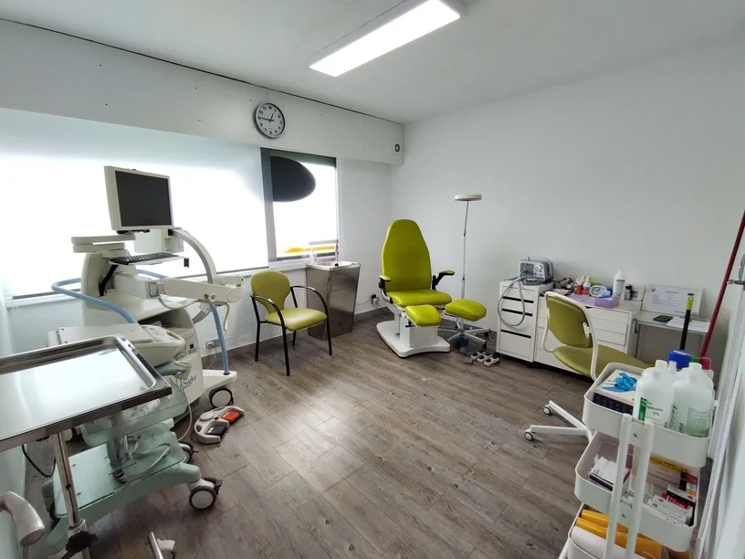

Rehabilitación

Gimnasio especializado para la rehabilitación...
Clic en la imagen para más información.
Podologia
Servicio de Podología desde quiropodias hasta cirugías podológicas...
Clic en la imagen para más información.
Desde nuestra apertura en enero de 2010, nos hemos consolidado como un referente en fisioterapia rehabilitación y podología en la Sierra de Madrid. En nuestra clínica, ubicada en ColladoVillalba en el corazón de la sierra, ofrecemos un servicio integral y personalizado que combina las técnicas más avanzadas con un trato cercano y profesional. Nuestro equipo de especialistas trabaja con dedicación para aliviar el dolor, mejorar la movilidad y promover una recuperación plena de nuestros pacientes, adaptando cada tratamiento a sus necesidades individuales.
Con más de una década de experiencia, nos enorgullece ser un centro de confianza para la comunidad local, comprometido con la salud y el bienestar de cada persona que nos visita. Ya sea por lesiones deportivas, problemas posturales o necesidades de rehabilitación, en nuestra clínica encontrarás el apoyo que necesitas para mejorar tu calidad de vida.
Gimnasio especializado para la rehabilitación...
Clic en la imagen para más información.
Servicio de Podología desde quiropodias hasta cirugías podológicas...
Clic en la imagen para más información.
En nuestra clínica de fisioterapia, estamos orgullosos de ser patrocinadores oficiales del Club de Baloncesto Villalba, encargándonos de la fisioterapia y rehabilitación de sus jugadores. Trabajamos para garantizar una óptima recuperación y prevenir lesiones, ayudando al equipo a rendir al máximo en cada temporada.
Tambien orgullososde ser patrocinadores del Club de Voleibol Villalba, brindando servicios especializados de fisioterapia y rehabilitación a sus jugadores. Nuestro objetivo es asegurar una recuperación rápida y efectiva, así como prevenir lesiones, para que el equipo pueda alcanzar su máximo rendimiento en cada partido.
Nuestra clínica de fisioterapia cuenta con más de 10 años de experiencia como centro de prácticas de la Universidad Europea de Madrid, colaborando en la formación de futuros fisioterapeutas. Este compromiso con la educación y la excelencia nos permite estar siempre a la vanguardia de los tratamientos y ofrecer una atención de alta calidad a nuestros pacientes.